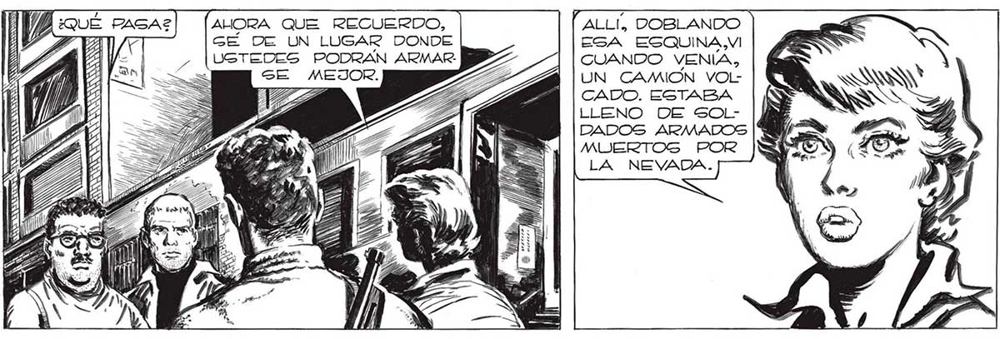

PERDONE, GEÑORITA, PERO NO SE CÓMO ME AGUANTO DE BESARLE... ¡PRIMERO NOS DICE DÓNDE ENCONTRAR EL PUESTO DE MANDO, Y AHORA NOS INDICA, DÓNDE PODEMOS ENCONTRAR ARMAS ! AUORA QUE RECUERDO, ALLI, DOBLANDO GÉ DE UN LUGAR DONDE ESA ESQUINA,VI USTEDES PODRAN ARMAR BD CUANDO VENIA, ZA | [UN CAMIÓN vOLCADO. ESTABA LLENO DE SOLDADOS ARMADOS MUERTOS POR LA NEVADA. EXA TN se Po Ñ =N vz j) e ENS NAS SN UN ON BAGTA DOBLAR LA ESQUINA... ¡NO! ¡TÚ NO NOS ¡ES USTED UNA VERDADERA LADA| N MOSTRARAS NADA! ! VENGA... YO LES MOS- iris: TRARE EL LUGAR ]): E 257
